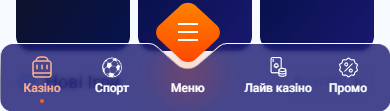
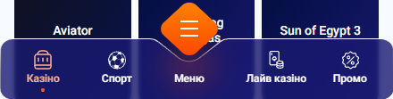
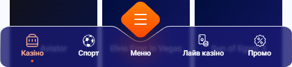

Bara de jos pe telefoane mai late de 390
Butonul portocaliu Меню stă într-o scobitură din bară. În Figma, între buton și marginea scobiturii rămâne un inel subțire de ~7px. Acum bara se întinde cu telefonul, scobitura se lărgește odată cu ea, iar butonul rămâne la fel de mare. Așa că inelul se lărgește și el.
- ACUM: pozele de pe site-ul publicat, la 390, 440 și 480.
- A, B, C: trei feluri de a o rezolva, desenate cu piesele reale ale barei.
- Fiecare e arătată la 390, 440 (iPhone-ul tău) și 480. Lățimile care nu încap pe ecran sunt micșorate, iar procentul e scris lângă ele.
- Alegi în chat, apoi scriu codul.
Bara se întinde toată
La 390 inelul are 7px, exact ca în design. La 480 ajunge la 16px, iar scobitura arată largă și goală.



Scobitura rămâne fixă
Se lungesc doar părțile drepte ale barei. Scobitura păstrează forma din Figma, deci inelul rămâne de 7px pe orice telefon.
Câștigi: la orice lățime, bara arată ca în design. Înălțimea, butonul și textele rămân neschimbate. Pierzi: nimic vizibil. În cod, bara se desenează din trei bucăți în loc de un singur desen întins.
Toată bara crește proporțional
Bara se mărește ca o poză: butonul, iconițele, textele și înălțimea cresc toate cu același procent.
Câștigi: proporțiile din design, identice la orice lățime. Pierzi: bara devine mai înaltă și acoperă mai mult din pagină, iar textele din ea ies mai mari decât restul paginii, care nu crește așa.
Bara rămâne de 390, pe mijloc
Pagina crește, bara nu. Peste 390 rămâne fâșie liberă în stânga și în dreapta ei.
Câștigi: exact bara din Figma, pixel cu pixel, fără niciun desen nou. Pierzi: la 480 bara plutește cu 45px goi pe fiecare parte și nu mai ajunge până la marginile ecranului.
Cifrele de sub fiecare desen sunt măsurate în browserul tău, pe desenul randat: butonul prin poziția lui reală, iar marginea scobiturii din forma barei la lățimea respectivă. Fundalul arată trei cartonașe reale de joc din aplicație.